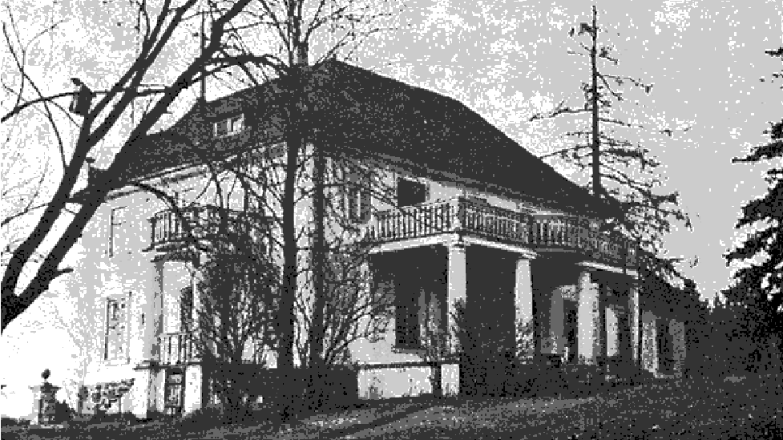
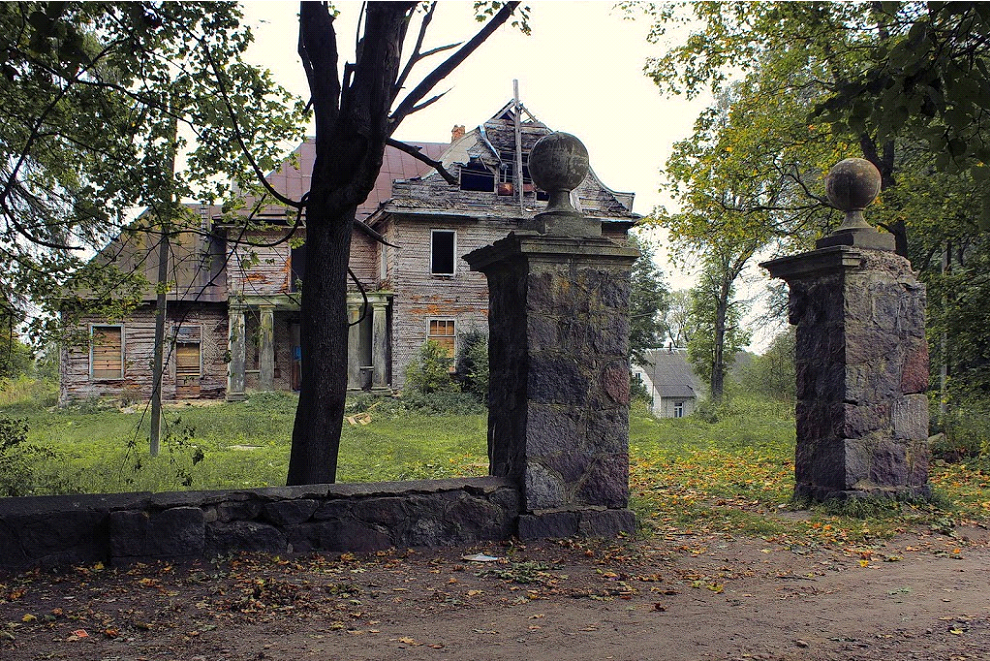

Уноследовав завод, Абрам и Давид взялись за дело. В 1907 году основали Дрожже-винокуренный завод в Лиде. В Ошмянском музее им. Ф. Богушевича сохранилось фото обертки продукции завода Стругачей. Для Ошмянского и Лидского заводов она была идентичной.
Во время владения заводом сыновьями Л.Д.Стругача объем выпускаемой продукции вырос.
В 1893-94 годах в Виленской губернии было введено новое Городское Положение, в результате чего, в Ошмянах городская дума была заменена на упрощенное общественное управление. В состав уполномоченных Ошмянскаго городского упрощенного общественного управления с 1909 по 1915(2 срока) входил Абрам Стругач.
Однако, в 1915 году на некоторое время предпринимательская деятельность прервалась. Началась эвакуация на восток. Что касается завода – вывезти оборудование не успели. Выехали только сами хозяева с семьями. Завод в Ошмянах становится собственностью немецких властей, его используют в качестве лесопилки.
По условиям Рижского мирного договора от 1921 года Ошмяны стали частью Польши. Братья возвращаются на родину и начинают налаживать производство. 22 июня 1922 года братья Абрам и Давид Стругачи получили разрешение на производство винокуренно-дрожжевой продукции.Стругачи смогли даже расширить свое производство.Они обосновались в доме №9 по улице Гольшанской (теперь – д. 17 по улице Гольшанской, здание автошколы)
В рассматриваемый период дрожзавод относился к крупным предприятиям. Был на одном уровне с Гродненской табачной фабрикой и пивоваренными заводами в Лиде и Гродно.
Информационный бюллетень о Западной Белоруссии № 11 от 1935 года свидетельствует: «Ва ўсім Віленскім ваяводстве няма прадпрыемстваў, якія выпкупілі б прамысловыя пасведчанні першай катэгорыі, маецца ўсяго адно прадпрыемства другой катэгорыі (фабрыка дражджэй Стругач у Ашмянах) і ўсяго два прадпрыемствы трэцяй катэгорыі (электрастанцыя і водаправод у Вільні)».
Это позволило Стругачам войти в 30-ку богатейших промышленников Беларуси первой половины ХХ века. С сентября 1939 года сведений о Потомках Л.Д.Стругача осталось крайне мало. Известно, что с приходом большевиков Ошмянский дрожзавод и другие промышленные предприятия были конфискованы. Тем не менее, Абрам Стругач с семьей остались в Ошмянах.
Жили они в имении Пановелишки. На современной карте этот адрес не найти, но на картах 1970-х годов он еще присутствует. Отмечен он и на карте 1930-х годов.
Сейчас адрес усадьбы д.Буденовка, ул. Л.Д. Стругача. Ее строительство начал еще сам Лейба Давидович Стругач в конце XIX . Нет сведений, кто принимал участие в разработке проекта усадьбы, известно только, что окончательно строительство было завершено к началу ХХ века. Дом был построен в стиле модерн с тремя балконами и террасой.


К сожалению, судьба богатейших людей Беларуси печальна. В 1941 году Абрам Стругач был убит. Детали удалось найти в статье Антония Ченко "Судьба евреев и цыган Ошмян": «...Шэрагі беларускай паліцыі папоўніў радавіты расіянін Васька Фаменка. Гэты атлетычны малады чалавек хутка стаў вядомы на ўвесь горад, як бязлітасны кат і выканаўца экзэкуцый, галоўным чынам над яўрэямі. Ад яго рукі загінулі на яўрэйскіх могілках: Абрам Стругач (паважаны ўласнік вінакурні і значных надзелаў зямлі), Залман і яго сын Хаім Саладухі (кавалі, у якіх месціўся мой брат Міхал), Карпава з дачкой і дзесяткі іншых. Васька спакойна фарсіў у футры Стругача, вызываючы абурэнне сярод жыхароў горада. Пасля перадачы пад адміністрацыю Літвы часткі віленшчыны, Васька, як старанны выканаўца прыказаў гітлераўскіх жандармаў, быў пераведзены ў Stutzpunkt пад Лебедзева. Калі распачалі сваю дзейнасць савецкія партызаны, ён гранатамі знішчыў нямецкае звяно, а сам з выжыўшым да гэтага часу ашмянскім яўрэям Гедалем Каганам, які быў у немцаў конюхам, адправіўся да савецкіх партызан у Налібокскую пушчу. І гэта была яго вялікая памылка. У аддзеле Васька быў выкрыты і застрэлены маладой яўрэйкай...»
Как мы видим, в статье не упоминается о судьбе жены и детей Абрама Стругача. Документальных свидетельств нет, однако нам удалось узнать, что в 1941 году Абрам Стругач некоторое время прятался в подвале дома местной жительницы. Выйти из подполья его вынудила лишь прямая угроза жизни семье. Местная жительница Масловская Мария Иосифовна (14 августа 1905-1978 года) также свидетельствовала о том, что на расстрел повели его вместе с женой.
Подробнее о быте семьи Абрама Стругача мы узнали из интервью с Ярошевич Ядвигой Степановной (1929 г. р), проживавшей в д. Пановелишки (сейчас д. Буденовка). «…в 1938-1939 гг. жили мы в имении Стругача. Я, мой отец и 2 брата – Мечислав и Эдвард. Эдвард работал вместе с аграномом. Были стеклянные ружерни (оранжереи), одна из них отапливалась и у нас в январе и феврале были свои овощи и цветы. Стругач был очень добрый человек. Были дочь и сын взрослые, не женатые. Жили где-то отдельно, может учились. На большом балконе пани делала детям учту (учебу). Столы ставили кругом. Гуляли в соломенных шляпах, в город ходили пешком. Молились в молитвенном доме возле кладбища. Платили рабочим по 1-2 злотому в день. В саду был фонтан – озерко зацементировано, была золотая рыбка. На горе (3 этаж) растили павлинов. С города приходили перья красть, были чучела павлинов. Кто-то видел, как его с женой гнали на кладбище и там расстреляли..»
Единственная из потомков Л.Д. Стругача, о ком удалось узнать подробнее –это его внучка (Дочь Хаи Евнин (урожденной Стругач)) Евнина Елена Марковна - (31 июля 1910, Нижний Новгород — 1998) советский и российский литературовед, историк французской литературы эпохи Возрождения, XIX—XX веков. Доктор филологических наук. Репрессирована в конце 1940-х гг. Реабилитирована в 1956 году.
Работала в Институте мировой литературы им. А. М. Горького АН СССР (сектор зарубежной литературы, 1938-1970). Награждена медалями. Члена Союза писателей СССР (1957). Члена Союза писателей Москвы. [9]